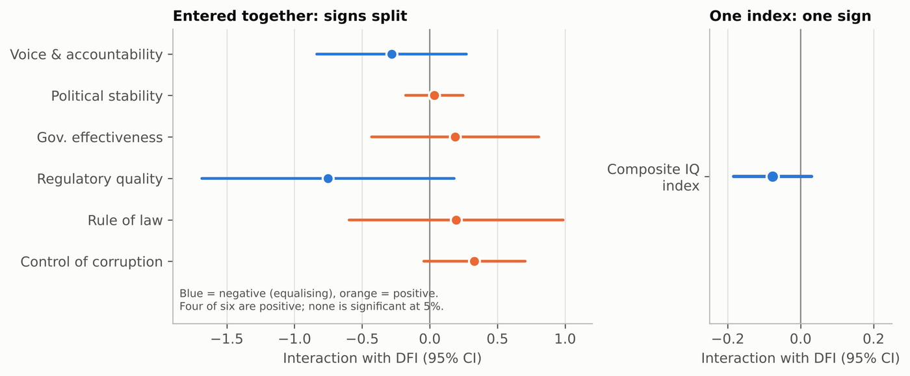

One peer-reviewed conference paper and one preprint.
Life Cycle Assessment of Alternative Marine Fuels for Inland Shipping of Bangladesh
Jannatul Ambia Shorna, Nasib Asgar, N. M. Golam Zakaria
Proceedings of the International Conference on Marine Technology (MARTEC 2024). Peer-reviewed conference paper, from my undergraduate thesis.
A well-to-wake life cycle assessment of candidate alternative fuels for Bangladesh's
inland shipping, modelled in SimaPro against environmental-impact and techno-economic
criteria, using supply-chain data, emission inventories, and regulatory standards.
Key finding. Fuel rankings do not transfer: local
supply-chain conditions change the well-to-wake carbon intensity of each option. The
study identifies the pathway with the strongest combined environmental and economic
case for the inland fleet.
Digital financial inclusion, institutional quality and income inequality: evidence from 36 developing economies, 2017 to 2022
Md. Iftekharul Amin, K. M. Walid, Nasib Asgar (corresponding author), Alif Bin Hasan, Ittesaf Rahman
Preprint on Research Square. Manuscript prepared for Empirical Economics, not yet submitted.
Does the inequality-reducing effect of mobile money depend on how well a country is
governed? We estimated two-way fixed-effects models on a panel of 143 country-years
across 36 developing economies. MBA research at IBA, with Dr. Amin as supervising
faculty.
Key finding. No average effect (p = 0.68). The
interaction with institutional quality is negative in all 36 leave-one-country-out
runs but not significant (-0.077, p = 0.15). Entering the six governance indicators
separately gives signs that split, while one composite index gives a stable estimate.

Left: six governance interactions estimated together. Right: the composite index. The panels use different horizontal scales.
My part. I contributed to the analysis, the independent
Python replication of the R code, and the manuscript. The replication caught two
errors in our first draft, which showed p of about 0.05, and we rewrote the paper
around the weaker corrected result.
Methods: two-way fixed effects, clustered standard errors, principal-component indices, R (plm), Python.